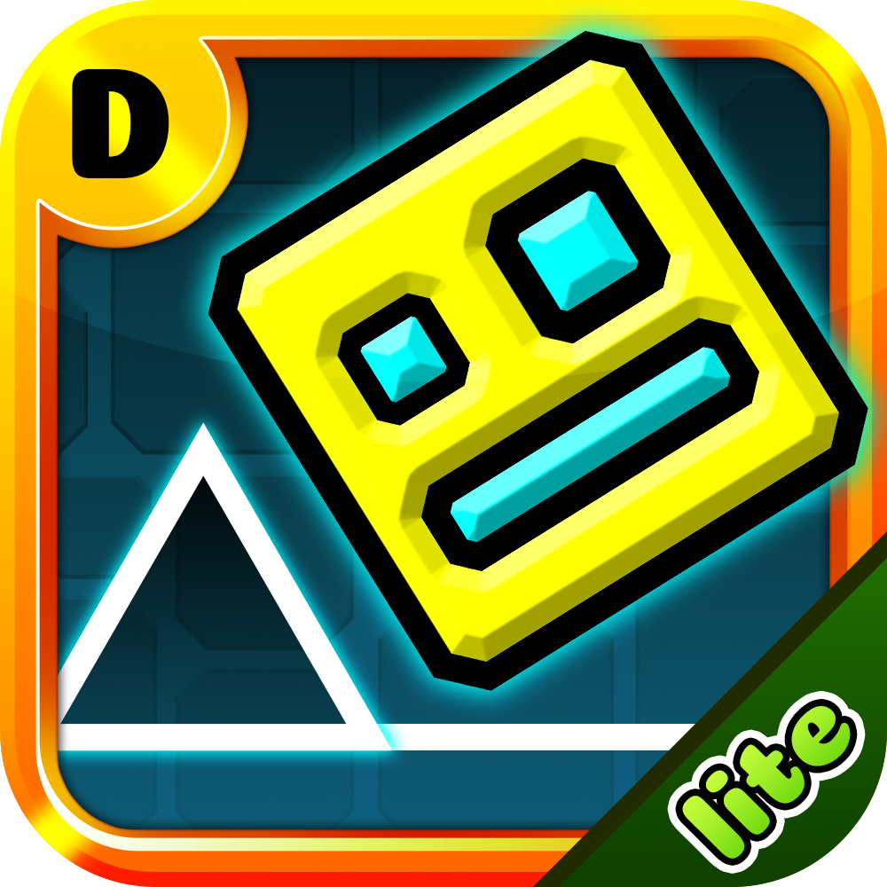
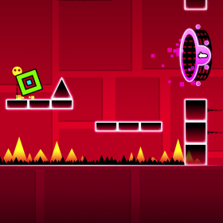

Geometry Dash Lite
About Geometry Dash Lite
Geometry Dash Lite puts your reflexes to the ultimate test. Control your character to survive through obstacles in this challenging, rhythm-based platformer.
In Geometry Dash Lite, you control a geometric cube that automatically moves forward. Simply tap the screen to jump, fly, and flip your way through a gauntlet of deadly obstacles. The gameplay is perfectly synchronized with the energetic background music, so you have to move to the beat if you want to survive.
The game's simple one-touch gameplay makes it easy to pick up but incredibly hard to master. Each level presents unique patterns, spikes, and moving platforms, pushing your reflexes and timing to the limit.
This free-to-play version of the popular Geometry Dash series is a great way to get started. It lets new players get a feel for the unique gameplay and challenging level design before they dive into the full version.

What is Geometry Dash
Before diving into the Lite version, it's essential to understand the phenomenon of the full game. Geometry Dash launched in 2013, starting as a simple project by Swedish developer RobTop Games. It quickly evolved from a basic jumping cube game into a global sensation on mobile and PC.
The full game is known for its massive library of official levels, an intense level editor allowing players to create and share their masterpieces, and a vast collection of unlockable icons, colors, and effects. To give new players a risk-free taste of this experience, RobTop released Geometry Dash Lite. It is a perfect introduction, offering a curated selection of official levels to hone your skills before considering the full version.

Geometry Dash Lite vs. Geometry Dash: What's the Difference?
If you are on the fence about continuing with the Lite version or if you should shell out for the Geometry Dash full version, here is a simple experience-based comparison.
- Price
- Lite: Available for download and gameplay 100% free.
- Full Version: One-time purchase for permanent access to all features.
- Number of Levels
- Lite: 16 official levels - Clubstep being the last level.
- Full: Access to 22 official levels, and more difficult levels like Deadlocked and Fingerdash.
- Level Editor
- Lite: Not available.
- Full: You can build your levels and share them with the Community, which is why Geometry Dash is so replayable.
- User-Created Content
- Lite: No access to official online levels.
- Full: You can access millions of user-created Gauntlets, curated map packs, etc.
- Customization
- Lite: Limited to a basic selection of icons and colors.
- Full: Minimal selection, as you unlock considerably more icons, colors, trails, and effects to get in your own custom experience.
- Secret Coins & Unlocks
- Lite: Only official-level coins can be obtained.
- Full: Besides user coins from your community levels, you must collect them to unlock bonus content.
- Difficulty Spectrum
- Lite: The only demon-rated you have access to is Clubstep.
- Full: Access the full range of difficulty, including extreme demon levels, which will challenge your reflexes and memory.
- Progress Sync
- Lite: Progress is stored locally only.
- Full: You can access your account with cloud saves and store progress across devices.
If you want to dip your toe into the basic gameplay mechanics and try some free levels before diving in, Lite is a good starting place. But if you plan to take it seriously and want custom levels, creative tools, and a complete path of progression, the full version will pay for itself.
Levels and Challenges
Every level in Geometry Dash Lite is meant to be intentionally designed for skill and challenge to instruct players. Every level introduces a new mechanic, trains a technique, and builds in difficulty and complexity as you progress through them. That's what makes Geometry Dash Lite feel like a complete game, not a "Lite" game.
- Stereo Madness (★1, Easy): Basic terrain learning, jump timing with nothing in the way, how high and when to jump with nothing else to worry about.
- Back on Track (★2, Easy): Gets more complex with learning how jump pads affect height and distance you jump.
- Polargeist (★3, Normal): Introduces jump rings, where players must understand timing to play them successfully.
- Dry Out (★4, Normal): Another jump pad level, but forces you to consider gravity and make adjustments; this is good.
- Base After Base (★5, Hard): Moves much more quickly and includes more varied sequences that need absolute tight control of your character.
- Can't Let Go (★6, Hard): More devastating than the base; it has long inverted sequences and added distractions in later waves.
- Jumper (★7, Harder): Leads to ship mode; you are now expected to control vertical movement.
- Time Machine (★8, Harder): Introduces mirror portals; these will reverse the screen's orientation.
- Cycles (★9, Harder): Ball mode flips the gravity rather than jumping.
- xStep (★10, Insane): Fast, tight sections with many possible transformations.
- Clutterfunk (Insane): Size portals alter speed and hitbox precision.
- Theory of everything (★12, Insane): UFO mode implementation requires rhythm and control.
- Electroman Adventures (★10, Insane): Potentially demanding jump timing with a bright design.
- Electrodynamix (★12, Insane): Combines shifting speed with memorization.
- Hexagon Force (★12, Insane): Dual mode requires you to control two icons at once.
- Clubstep (★14, Demon): The hardest level in Lite and will be used to test everything you have learned.
And for players ready to take their skill set even further, Geometry Dash Meltdown is great for stepping into serious rhythm-based gameplay.
Key Features
Geometry Dash Lite delivers a polished, addictive experience that captures the heart of the full game. Below are the features that make it worth your time.
Addictive Rhythm-Based Gameplay
Each level is carefully aligned with high-energy electronic music that provides elevation and positioning coordinates. Your jumps, flips, and dashes are all timed perfectly, following an incredible beat.
Iconic Neon Graphics
Geometry Dash Lite uses bright neon colors and striking shapes to create a geometric universe. The clean lines ensure that gameplay is always readable, while the flashing backgrounds and dynamic effects react to the music.
Well-Paced Difficulty That Builds Skill
Levels are arranged in a way that introduces new mechanics gradually. The game slowly brings in portals, pads, and vehicle changes, starting with basic jumps.
Practice Mode That Supports Progress
Geometry Dash Lite includes a helpful Practice Mode where you can set your checkpoints. Instead of restarting a level from the beginning after every mistake, you can focus on mastering tricky sections.
Music-synced Backgrounds
In Geometry Dash Lite, the pulsing electronic soundtrack isn't just background noise-it's the game's heartbeat. Every jump, obstacle, and gravity shift syncs perfectly with the music, turning levels into playable rhythm tracks.
Controls and Basic Rules
Geometry Dash Lite is a fast-paced rhythm platformer that challenges your reflexes and timing. While its control system is elegantly simple, mastering the game requires precision, pattern recognition, and a deep understanding of how each game mode functions. This guide covers the fundamental controls and rules to help you navigate the vibrant, obstacle-filled levels.
Controls
The game is primarily controlled with a single input: a tap on the screen, a click of the left mouse button, or a press of the Spacebar.
- Tap (or click) to jump.
- Ship: Hold to rise, release to descend.
Rules
- Complete the level from 0% to 100% in one try.
- One mistake sends you back to the beginning. If you collide with any hazard, your run ends, and you are sent back to the start to try again.
Understanding Hazards and Obstacles
- Spikes: The classic hazard.
- Saw-blades and gears: Moving or spinning, they have wide hitboxes.
- Vertical walls or the front of blocks: Crashing into a wall face-first is fatal.
Tips and Strategies
Excelling at Geometry Dash Lite requires more than just fast reactions; it demands a blend of innovative practice, mental fortitude, and a deep understanding of the game's mechanics. Adopting an effective training strategy and treating every attempt as a learning opportunity can turn frustration into progress. Here are key tips and techniques to elevate your gameplay.
Make Practice Mode Your Training Lab
As a newbie, try to play in practice mode. You can practice checkpoints on the most challenging sections of the level until they feel like second nature. Run the sections in a different order or deliberately take riskier routes to push your boundaries.
Analyze Your Failures Like a Pro
Heartbeat care and alterations in bright screens cause eye strain. Use a contrasting display mode so obstacles pop out, and wear quality headphones to isolate the rhythmic music cues.
Some of the best players would even implement their metronome app so that they can concentrate on locking in tempos, especially on levels where the jumps, where the jumps, fall out of sync with the music.
Optimize Your Setup for Peak Focus
Consider lowering screen brightness to reduce eye strain, using a high-contrast display mode to make obstacles stand out, and wearing quality headphones to isolate the rhythm cues.
Some top players even use a metronome app to internalize tricky tempos, especially on levels where the music and jumps fall out of sync.
Warm Up and Set Micro-Goals
When you start any play session, work through easier levels first to help you sync your reflexes with the game's rhythm. Have micro-goals for each play session, reach a new percentage milestone, or master one of the coin routes. Each little milestone is a small victory and will hopefully create momentum for your play sessions to keep your motivation even when full completion feels far away.
Build Mental Toughness
Feeling frustrated over the failed attempts again and again is completely normal; all the top players have learned to reset their mentality. It is essential to take a planned break, talk positively to yourself, and understand that every single failed attempt is a learning opportunity.
Engage with the Community
Watch elite player replays to study their decision-making. Also, share your gameplay clips for advice and offer tips to others. Teaching is a great way to help solidify your skills.